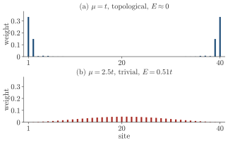
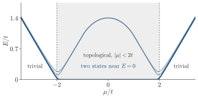
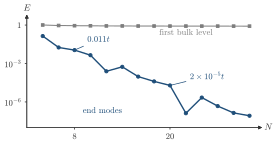

Page 13 of 16 of this session
5.17 Topological zero modes with periodic and open boundaries
Do the end Majoranas of the Kitaev chain survive away from \(\Delta=t\) and \(\mu=0\), and what ends the phase where they exist? We will now see that they survive in the whole window \(|\mu|<2t\), which ends where the bulk gap closes. On a finite chain the two end modes are split by an energy that falls exponentially with the length of the chain.
\[H_{\text{Kitaev}} = -t\sum_n \left(c_n^\dagger c_{n+1} + \text{h.c.}\right) - \mu\sum_n c_n^\dagger c_n + \Delta\sum_n \left(c_n c_{n+1} + c_{n+1}^\dagger c_n^\dagger\right). \tag{5.19}\]
This is the Kitaev chain of Section 5.16, a chain of spinless fermions \(c_n\) with the hopping \(t\), the chemical potential \(\mu\) and the pairing \(\Delta\) between neighboring sites. At \(\Delta=t\) and \(\mu=0\) it has a free Majorana at each end.
If we diagonalize (5.19) on a periodic chain with \(\Delta\neq0\) and \(|\mu|<2t\), we obtain a fully gapped spectrum, with a superconducting gap set by \(\Delta\) and \(\mu\) and a nontrivial topological invariant of the bulk. This is the same kind of \(\mathbb{Z}_2\) or winding invariant that classified the two phases of the SSH model through the Zak phase (3.6) in Session 3. Here it is computed from the BdG bands instead of an ordinary Bloch Hamiltonian.
On an open chain, for example with \(N=100\) sites and the two ends disconnected, the bulk spectrum keeps essentially the same gap. However, two extra states appear, at zero energy and localized at the left end and at the right end of the chain. These are the unpaired Majoranas \(\gamma_1\) and \(\gamma_{2N}\) from (5.21), which we now see as real mid-gap states of the open chain. Schematic 5.16 shows where the lowest state sits. In the topological phase its weight is at the two ends, and in the trivial phase it is spread over the chain.

These zero modes are very robust. When we move away from the fine-tuned point, with \(\Delta \ne t\) and finite \(\mu\), the zero modes survive as long as we stay in the same topological phase.
The standard criterion for the general Kitaev chain (5.19) with \(\Delta \ne 0\) is
\[|\mu| < 2t \quad \Longrightarrow \quad \text{topological phase (unpaired end Majoranas)}, \qquad |\mu| > 2t \quad \Longrightarrow \quad \text{trivial phase.} \tag{5.22}\]
The bulk gap closes only at \(|\mu|=2t\), at \(k=0\) for \(\mu=-2t\) and at \(k=\pi\) for \(\mu=2t\). So for \(\Delta>0\) the end Majoranas of the point \(\Delta=t\), \(\mu=0\) stay in the whole window \(|\mu|<2t\). For \(\Delta<0\) the same holds with the point \(\Delta=-t\), where the free halves are \(\gamma_2\) and \(\gamma_{2N-1}\).
The steps Where the bulk gap of the Kitaev chain closes
We start from the bulk energy of the periodic chain. It uses only the modulus of the pairing of (5.20), \(|\Delta(k)|=2|\Delta\sin k|\), and not its sign,
\[E(k)^2=\varepsilon(k)^2+|\Delta(k)|^2=\left(2t\cos k+\mu\right)^2+4\Delta^2\sin^2k.\]
The simplest case is \(\Delta=t\) and \(\mu=0\) of Section 5.16, where \(E(k)^2=4t^2(\cos^2k+\sin^2k)=4t^2\), so the bulk is flat at \(2t\) and far from zero.
In general \(E(k)^2\) is a sum of two squares, so it vanishes only where both vanish. For \(\Delta\neq0\) the second square vanishes only at \(\sin k=0\), which is \(k=0\) or \(k=\pi\). At \(k=0\) the first square is \((2t+\mu)^2\), which vanishes at \(\mu=-2t\), and at \(k=\pi\) it is \((\mu-2t)^2\), which vanishes at \(\mu=2t\). So the bulk gap closes only at \(|\mu|=2t\), for any \(\Delta\neq0\).
Inside the window \(|\mu|<2t\) we can then go from any point with \(\Delta>0\) to \(\Delta=t\) and \(\mu=0\) without closing the gap. We first move \(\mu\) to zero and then \(\Delta\) to \(t\), and this works as long as \(\Delta\) keeps its sign. For \(\Delta<0\) we go in the same way to \(\Delta=-t\), where the chain is \(-it\sum_n\gamma_{2n-1}\gamma_{2n+2}\) and the free halves are \(\gamma_2\) and \(\gamma_{2N-1}\). Both signs give the same levels, since \(c_n\to ic_n\) changes \(\Delta\) into \(-\Delta\) and leaves the hopping and \(\mu\) as they are. The BdG levels come in pairs \(\pm E\), so a single end Majorana cannot move away from zero by itself, and the end Majoranas of (5.21) stay on the way. Outside the window we can go in the same way to a very large \(|\mu|\), where each site is empty or full and nothing is left at the ends. At \(\Delta=0\) the chain with \(|\mu|<2t\) is a metal, with the gap closed at its two Fermi points.
In the trivial phase, a large chemical potential fixes each site to be either empty or occupied, since the chain is spinless. The two Majoranas that form the electron of each site then combine again locally into an ordinary confined fermion, so nothing is left to deconfine. In the topological phase, on the other hand, the hopping dominates over the onsite term, \(|\mu|<2t\), and any \(\Delta\neq0\) is enough. The two Majoranas at each site pair with the Majoranas of the neighboring sites instead of with each other, which leaves the two end Majoranas without any partner. This is the same contrast between the dimerized strong-coupling limit and the atomic weak-coupling limit that distinguished the topological and trivial phases of the SSH model in Section 3.9b. The Kitaev chain reproduces it because, as we saw in Section 5.16, it is the SSH model with new labels.

The measurement uses InSb nanowires with one normal contact of gold and one superconducting contact of NbTiN. The probe is an electrical measurement on the wire, and gate voltages vary the electron density and define a tunnel barrier between the two contacts. In magnetic fields of order \(100\) mT the measurement shows bound, mid-gap states at zero bias voltage. These states stay at zero bias when the field and the gate voltages are changed over considerable ranges. The authors write that their observations support the hypothesis of Majorana fermions in such nanowires. The measurement is in this article. In our reading, the nanowire is not the chain (5.19) itself, but a gate that changes the electron density changes \(\mu\). The abstract does not say which of the gates were changed. We then read a level that stays at zero while the gate voltages change as the analog of (5.22), where the end Majoranas stay in a whole window of \(\mu\). In our reading this window is not \(|\mu|<2t\), which is the window of the chain (5.19) with its hopping \(t\), and the wire has no such \(t\). For a wire the window is set by the magnetic field together with \(\mu\), as Section 5.18 shows for an edge.
An open Kitaev chain with \(\Delta=0.5t\) and \(\mu=t\) has two Majoranas at its ends. We change the chemical potential to \(\mu=-t\). What happens to them?
\[|\mu| < 2t \quad \Longrightarrow \quad \text{topological phase (unpaired end Majoranas)}, \qquad |\mu| > 2t \quad \Longrightarrow \quad \text{trivial phase.} \tag{5.22}\]
Show the answers
- A. ✓ True
This is true. In both cases \(|\mu|=t<2t\), so the chain stays in the topological phase of (5.22). The end Majoranas remain, and only the position of the bulk band changes.
- B. ✗ False
This is false. The gap of the chain closes only at \(|\mu|=2t\), where \(k=0\) or \(k=\pi\) has \(E=0\). Going from \(\mu=t\) to \(\mu=-t\) never crosses \(\pm2t\), so no transition happens.
- C. ✗ False
This is false. Two Majoranas on the same end can couple, since \(i\gamma_1\gamma_1'\) is an allowed term, so they would gap out. A single Kitaev chain has one Majorana per end in any case.
A Kitaev chain with \(N=8\) sites, \(\Delta=0.5t\) and \(\mu=t\) is in the topological phase. Are its two end modes at exactly zero energy?
Show the answers
- A. ✗ False
This is false. Take \(\Delta=0.5t\) and \(\mu=t\) with \(N=8\). The BdG spectrum has the lowest level at \(E\approx0.011t\) and not at zero. For \(N=20\) it falls to \(2\times10^{-5}t\).
- B. ✓ True
This is true. The end modes have a finite localization length, so for a short chain they overlap and hybridize. For \(\Delta=0.5t\) and \(\mu=t\) the splitting is \(0.011t\) at \(N=8\) and \(2\times10^{-5}t\) at \(N=20\).

The lowest level of the open chain against its length, for \(\Delta=0.5t\) and \(\mu=t\). It falls roughly exponentially with oscillations, and the first bulk level comes down from \(1.02t\) at \(N=4\) to \(0.83t\) at \(N=30\), close to the bulk value \(0.82t\). - C. ✗ False
This is false. For \(\Delta=0.5t\) and \(\mu=t\) the smallest bulk energy is \(0.82t\), while the end modes of an \(N=8\) chain are at \(0.011t\). They are inside the gap, close to zero.
Each picture is an open Kitaev chain of 40 sites, with \(\Delta=0.5t\). The bars are the weight of its lowest state on each site. Which chain is in the trivial phase?
Show the answers
- A. ✗ False
This is false. The weight sits on the first and the last few sites, as for a pair of end Majoranas. This chain has \(\mu=0\), inside the window \(|\mu|<2t\), and its lowest level is below \(10^{-9}t\).
- B. ✗ False
This is false. The weight is again on the first and the last few sites. This chain has \(\mu=-1.5t\), and the window \(|\mu|<2t\) depends only on \(|\mu|\), so it is topological too, with its lowest level below \(10^{-9}t\).
- C. ✓ True
This is true. The weight is spread over the middle of the chain, and the eight sites at the two ends hold only \(2\%\) of it together. This chain has \(\mu=3t\), outside the window \(|\mu|<2t\), and its lowest level is a bulk state at \(1.01t\).
The bulk energy of the Kitaev chain is \(E(k)^2=(2t\cos k+\mu)^2+4\Delta^2\sin^2k\). Find the smallest bulk energy for \(\Delta=0.5t\) and \(\mu=t\), and the momentum where it sits.
Solution
With \(\Delta=0.5t\) we have \(4\Delta^2=t^2\). We write \(x=\cos k\) and \(\sin^2k=1-x^2\), so that
\[\frac{E^2}{t^2}=(2x+1)^2+1-x^2=3x^2+4x+2.\]
This parabola has its minimum at \(x=-2/3\), which is inside the range \(-1\le x\le1\) of a cosine. So the smallest energy sits at \(\cos k=-2/3\), which is \(k=\pm2.30\), and there
\[\frac{E^2}{t^2}=\frac43-\frac83+2=\frac23,\qquad E=\sqrt{2/3}\;t=0.82t.\]
This is the smallest quasiparticle energy, and the two branches \(\pm E\) are \(1.63t\) apart at this momentum. The first bulk level of an open chain comes down to this value as the chain grows, \(0.89t\) at \(N=8\) and \(0.83t\) at \(N=20\), while the end modes of \(N=8\) are at \(0.011t\). So in a measurement at the end of the chain, the end modes sit far below the energy where the bulk states start.
Try it. In the cell, the line mu = 0.3 sets the chemical potential through h.add_onsite, which is \(\mu=-0.3\) in (5.19). With mu = 1.0 the two states near zero energy stay. With mu = 2.5 they disappear, and for \(L=40\) the lowest energy is about 0.5, in line with (5.22).
- In Section 5.18 a transition of the type of (5.22) is crossed by changing the exchange field of a magnet on a quantum spin Hall edge.
- In Section 9.8 the bulk-boundary correspondence that gives these end modes also gives a bound state at a single vacancy.
- In Section 10.6 the Zak phase is one of the topological invariants that are set against local order parameters when phases are classified.